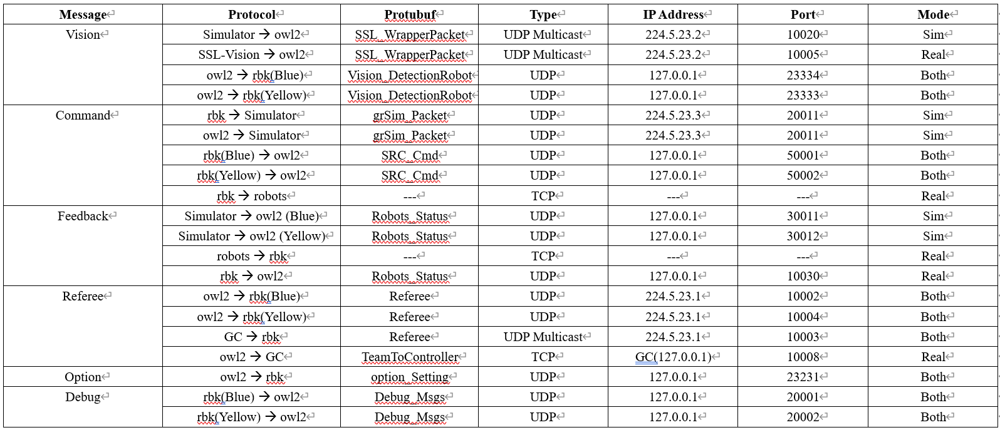
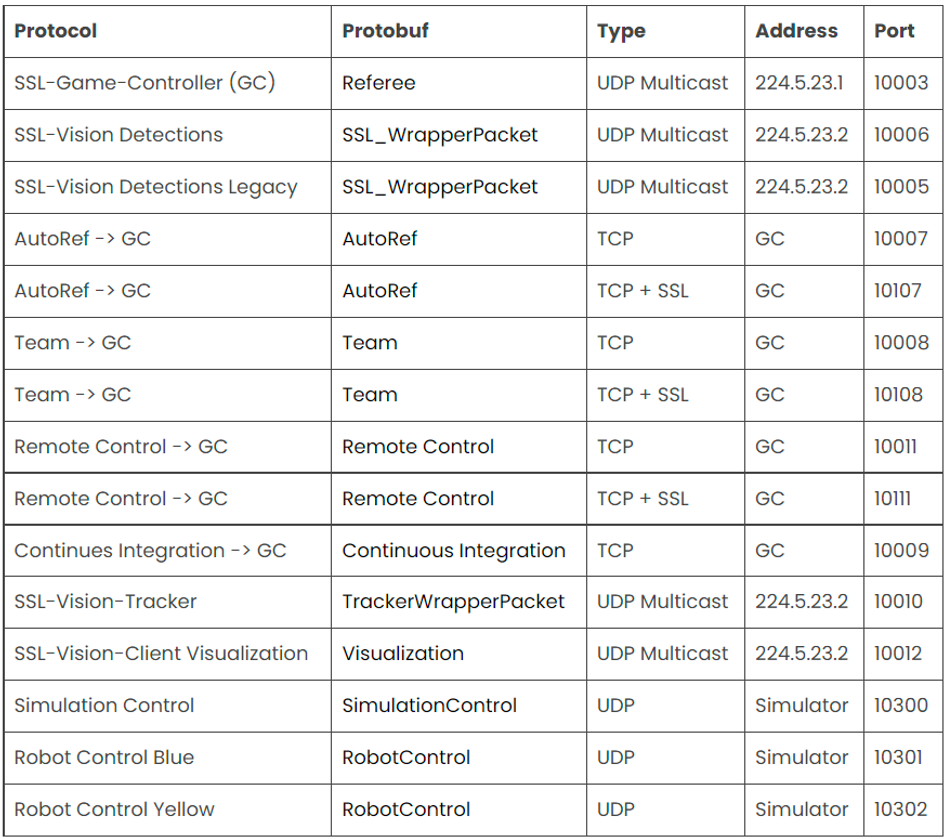
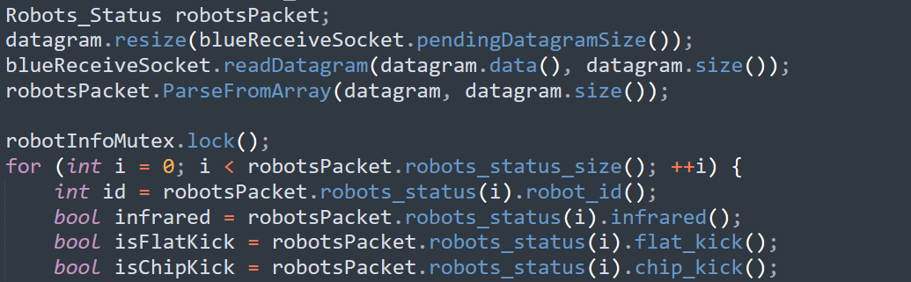
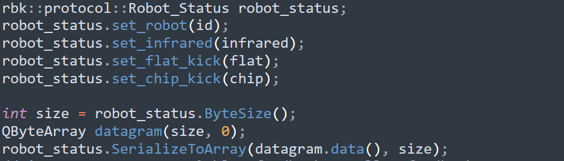

4.2. 软件间通讯
本篇文章盘点赛队目前主要使用的软件间的通讯机制，希望大家能够据此了解各软件的定位，串联起整个系统
赛队定义¶
涉及软件¶
- rbk：控制程序，负责决策，判断场上局势，发布运动指令
- owl2：可视化工具，处理视觉以得到更为准确的位姿，同时显示辅助调试的信息
- grSim(src-simulation)：仿真器，可提供仿真环境下的相机视觉（裸视觉）、机器人反馈等信息
- ssl-vision：视觉机，官方推荐使用，在实车模式中提供相机视觉
- 裁判盒：发送裁判指令（Halt、Stop……），包括owl2自带的和GC
通讯汇总¶

- Message：通讯传递的信息
- Vision：视觉，包括裸视觉和滤波处理后的视觉
- Command：运动指令
- FeedBack：机器人的反馈，包括红外、踢球情况等
- Referee：裁判指令
- Option：模式选择，包括仿真或实车、选色、选边等
- Debug：辅助调试语句
- Protocol：通讯协议名称，箭头表示通讯方向，发送方->接收方
- Protubuf：通讯协议的具体格式，仅用于网络通讯
- Type：通讯协议的种类，主要有TCP、UDP两类，其中UDP Multicast为使用网络进行组播，可以给到同一网段的多个设备
- IP Address：IP地址，仅用于网络通讯
- Port：通讯端口，仅用于网络通讯
- Mode：通讯存在的模式，Sim指仿真模式，Real为实车模式，Both即两者中都存在
- 表格中的大部分通讯都是通过网络传播，也列举了软件和机器人（实车）之间的通讯机制，属于无线载波通讯，通讯协议详见机器人通讯协议
官方定义¶
- 明确一些赛事通用软件间的通讯机制，统一通讯协议

- 更详细内容和具体的通讯协议定义，请查阅League Software
知识补充¶
通讯协议¶
- 通讯，目的是传递信息，简单来说有几个要素，发送设备、接收设备和通讯协议
- 前两者好理解，通讯协议可以理解为双方统一使用的语言，否则一个说汉语，一个说英语，谁也听不懂谁
- 网络中的通讯协议主要有两个，TCP和UDP
- TCP是一种可靠通讯方式，双方先要经过三次握手建立连接，接收端每接收到新的信息还需要给予发送端反馈，以评价通路状况，避免阻塞。其准确率高，丢包率低，但速度受限
- UDP是一种常在于网络通讯的方式，无需特意建立连接，发送端将信息发至网络，通过网络向某一端口传输，接收端绑定该端口，等待信息。特点是速度快，但丢包率和准确率不如TCP，很大程度上取决于网络状态
- 所以综合两者优劣，考虑到比赛是个高帧率的场景，对通讯速度要求较高，绝大多数通讯采用UDP
- 而几处网络通讯采用TCP是因为其可靠性更为重要，如AutoRef对GC的反馈，需要信息的准确，避免误判
- UDP Multicast是使用UDP进行组播，如视觉机就有如此需求，比赛时各队主机均与视觉机相连（网线、交换机），处于同一局域网段，此时就需要建立一个组播群组，所有设备都在此注册，信息就可传递至每个设备。否则无论连接到局域网的客户端想不想接收该数据，服务端都会给客户端发送该数据（广播），进而造成客户端上数据的拥塞
- 那么，通讯中的信息到底是什么？其实无论那种通讯协议，信息都以比特流的形式传递，信息如何负载在上面，又要如何恢复出来，就要涉及到具体的格式和编解码方法。而在网络通讯中，最为常用的protubuf就是来完成这两个工作的
Protubuf¶
- protubuf其实是一种数据存储格式，因为其结构优异，且方便与比特流相互转化，因此被广泛使用
- 回到我们的项目里，protubuf用.proto文件的形式编写，几个常用的语法：
- syntax定义使用protubf的版本，不同版本语法有所差别
- import类似C++中的include，引入其他文件，以使用其他文件中定义的信息格式
- package也是一种引用
- message定义了一种信息格式，具体内容包括：
- 种类：
- 类似C++中的bool、double、string，但没有int，但有uint32，也可自定义，即再定义一个message，语法相同
- 前面需加一个前缀，补充信息特性：required 必要；optional 可缺失；repeated 重复，组成数组
- 名称
- 排序：这个最为重要，收发两端必须一致
- 在C++中使用protubuf，需要先生成定义接口的文件（.pb.h、.pb.cc），使用protoc.exe，输入以下指令（一般都配有自动运行脚本），生成文件在同一路径下的cpp文件夹中
./protoc.exe --cpp_out=cpp *.proto
- 下面给出一个.proto和C++相对应的示例：
syntax = "proto2";
package tutorial;
message Person {
required string name = 1;
required int32 id = 2;
optional string email = 3;
enum PhoneType {
MOBILE = 0;
HOME = 1;
WORK = 2;
}
message PhoneNumber {
required string number = 1;
optional PhoneType type = 2 [default = HOME];
}
repeated PhoneNumber phones = 4;
}
message AddressBook {
repeated Person people = 1;
}
// name
inline bool has_name() const;
inline void clear_name();
inline const ::std::string& name() const;
inline void set_name(const ::std::string& value);
inline void set_name(const char* value);
inline ::std::string* mutable_name();
// id
inline bool has_id() const;
inline void clear_id();
inline int32_t id() const;
inline void set_id(int32_t value);
// email
inline bool has_email() const;
inline void clear_email();
inline const ::std::string& email() const;
inline void set_email(const ::std::string& value);
inline void set_email(const char* value);
inline ::std::string* mutable_email();
// phones
inline int phones_size() const;
inline void clear_phones();
inline const ::google::protobuf::RepeatedPtrField< ::tutorial::Person_PhoneNumber >& phones() const;
inline ::google::protobuf::RepeatedPtrField< ::tutorial::Person_PhoneNumber >* mutable_phones();
inline const ::tutorial::Person_PhoneNumber& phones(int index) const;
inline ::tutorial::Person_PhoneNumber* mutable_phones(int index);
inline ::tutorial::Person_PhoneNumber* add_phones();
- 具体接口函数可以在生成的文件中查找，几个常用的：
- xxx()：某一项的内容，无论.proto中变量名有无大写字母，xxx均为小写
- mutable_xxx()：返回指针，方便程序内修改数值
- set_xxx(xxx)：设置某一项内容
- has_xxx()：检查是否有此项
- clear_xxx()：归为默认值（0），这也是一个小缺憾，无法区分0到底是设置的还是默认的
- xxx_size()：数组大小
- add_xxx()：添加数组成员
- SerializeToArray(xxx,size)：转化为比特流
- ParseFromArray(byte,size)：从比特流中提取信息
- 所以具体操作很明显了，发送端按信息格式填好后，转化为比特流发送；接收端将信息提取出后，可以直接利用。编解码方式在protubuf内部定义，使用方便
- 下方附上两个示例，分别是接收和转发仿真器的机器人反馈，注意引用相关的接口文件

